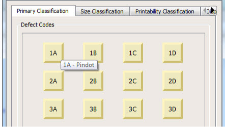
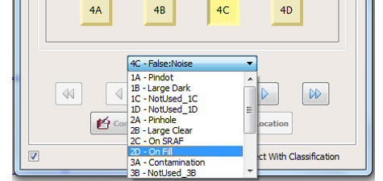

Use the Defect
Classification window to classify a defect.
Procedure
- To classify the current defect
using a defect code button, click the button with the desired defect
code. You can view the defect type mapping for the defect code on
the tool tip of the defect code button as shown in Figure 1.
To view the tool tip, move
the mouse pointer over a button.
Figure 1. Tool Tip for Defect
Type
- To classify the current defect,
select the classification type from the Defect Classification List.
The dropdown list displays a list of all possible classification
types.
Figure 2. Defect Classification
Types
- You can classify subsequent
defects with the previous classification.